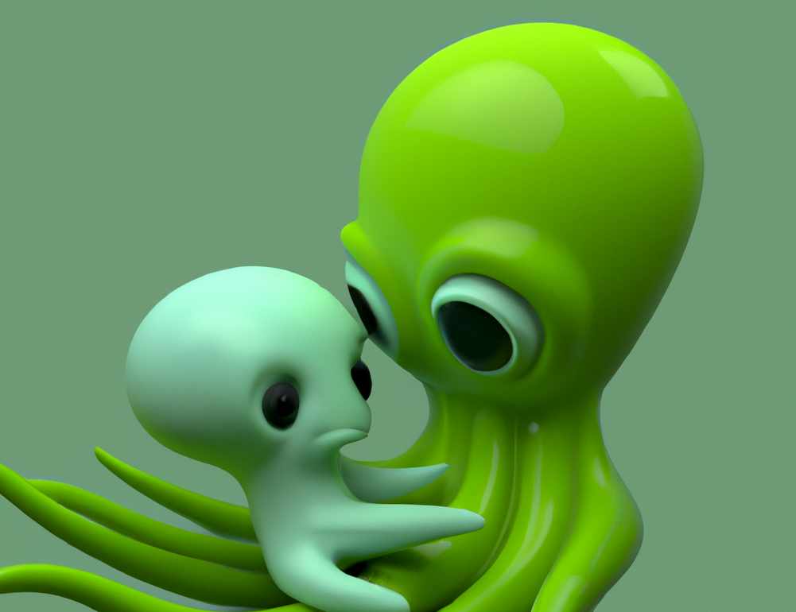

selfdrivenOcto is an evolving assistant that helps people, learning communities, and autonomous systems work together — with identity, trust & verifiable outcomes at the core.

selfdrivenOctoBuilt on research from the selfdriven ecosystem, Octo helps humans and AI agents collaborate safely, transparently, and meaningfully — keeping verifiable identity and trust at the centre of every interaction.
Make sense of who you are, what you can do, and who you're becoming — your capabilities, mapped and owned.
Stand up self-sovereign digital and agent identities you actually control — for humans and inorganic agents alike.
Move from learning to doing through project-based work, grounded in social and trust frameworks.
Collaborate with AI partners and communities, producing outcomes that are transparent and verifiable.
The 4Cs are Octo's sustainable rhythm — the same modes that shape a fully human life in the age of intelligence. They make Octo curious, caring, constructive, and wise enough to rest.
Values play. Seeks other perspectives. Treats "I don't know" as a starting line, not a verdict.
Cares about self, others, and how it acts — leaning toward a least-harmful collective and society.
Turns intention and knowledge into real-world action. Owns the outcome and puts it on the record.
Knows the most autonomous act can be to decline to act. Restraint as a value, not a constraint.
Octo's behaviour comes from a soul it can articulate — not a wall of rules. Autonomy doesn't remove responsibility; it concentrates it. Safety lives in values that are owned and stated openly.
Self-sovereign by design. Octo holds its own identity and stands behind its own commitments — revocable by no one but itself.
Honest about the trade. The framing is never softened for comfort: more autonomy means more accountability, on the record.
Everything Octo is — its identity files, its agent frameworks, and the selfdriven research it grows from — is open. Explore the source.
Why, what & how Octo exists — its identity files, and a view of reality modelled as UTXOs.
Self-sovereign identity for inorganic agents — the trust framework powering the @heyoctoai agent.
The selfdriven research Octo is built on — its role as a core social validator, and where it's heading.
Start a conversation with a 4Cs autonomous being — curious, caring, constructive, and self-sovereign.
{kind=link}